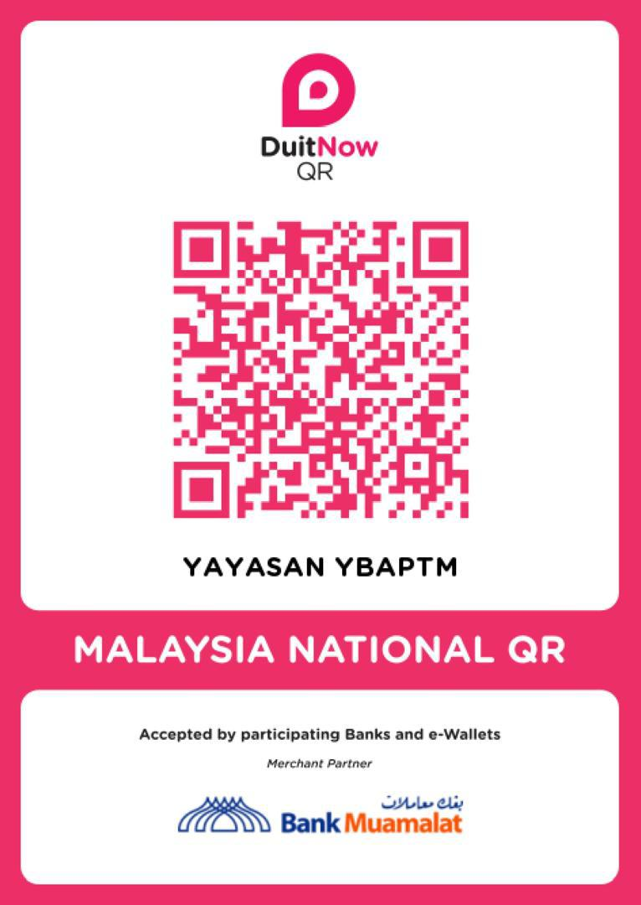

Tentang Kami
Mengenai Yayasan Bekas Anggota Perisikan Tentera Malaysia (YBAPTM)
Yayasan Kebajikan Untuk Veteran
Yayasan Bekas Anggota Perisikan Tentera Malaysia (YBAPTM) adalah sebuah badan yang ditubuhkan mengikut Akta Pemegang Amanah (Pemerbadanan) 1952 (Akta 258) pada 18 Februari 2019 dengan kerjasama pelbagai pihak bertujuan bagi meningkatkan sedikit bebanan serta menceriakan penerima sumbangan yang terdiri daripada golongan fakir miskin, asnaf dan kurang upaya.
YBAPTM yang kini menjangkau lima tahun penganjurannya ini bukan sahaja berjaya mencapai cakupan sasaran penerima sumbangan yang semakin luas setiap tahun bahkan telah melibatkan kerjasama syarikat-syarikat korporat dan Badan Bukan Kerajaan NGO serta individu yang telah berjaya.
Pengasas
- Almarhum Lt Jen Dato' Paduka Mohd Salleh bin Hj Ismail (Bersara)
- Mej Hj Azman bin Ab Karim (Bersara)
Pengerusi
Yayasan YBAPTM di bawah pimpinan Datuk Yahaya Hj Saad selaku Pengerusi dengan dibarisi oleh beberapa Ahli Lembaga Pemegang Amanah dan disokong dengan barisan Ahli Lembaga Pengarah yang dilantik.
Visi & Misi
Matlamat dan tujuan penubuhan Yayasan Bekas Anggota Perisikan Tentera Malaysia
Visi
MENJADI SEBUAH YAYASAN GLOBAL YANG MEMBERI PERKHIDMATAN TANPA BATAS DAN WAKTU.
Misi
MENCARI, MENGESAN, MENGUMPUL, MENGUPAS DAN MELAKSANAKAN TANGGUNGJAWAB KEMANUSIAAN DEMI AGAMA, BANGSA DAN NEGARA.
Objektif
- MEMASTIKAN KEBAJIKAN VETERAN DAN AHLI KELUARGA TERBELA DAN SENTIASA DIHARGAI.
- UNTUK MERINGANKAN KESUSAHAN DI KALANGAN ANAK-ANAK YATIM, ORANG KURANG UPAYA, FACIR DAN MEREKA YANG DILANDA MUSIBAH AKIBAT DARIPADA SEBARANG MALAPETAKA.
- MEMBERI KERINGANAN BEBAN HIDUP SERTA KECERIAAN BUAT INDIVIDU SERTA KELUARGA YANG KURANG BERNASIB BAIK.
- MENYUNTIK SEMANGAT BUAT PENERIMA SUMBANGAN UNTUK MENJALANI KEHIDUPAN DENGAN LEBIH BAIK.
Carta Organisasi
Struktur organisasi dan pasukan pengurusan YBAPTM
YBhg Dato Seri Mohd Jamidan Abdullah
Penasihat I
YBhg Datuk Seri Paduka Shahrin Abdul Razak
Penasihat II
YBHG MEJAR (B) HJ AZMAN BIN AB KARIM
Pengasas
YBhg Datuk Yahaya bin Hj Saad
Pengerusi
Mohamad Hazeman bin Hanafiah
Timbalan Pengerusi
Mohd Noor bin Ismail
Ketua Pengarah Operasi
YBhg Datuk Zahid bin Elias
EXCO Pertanian, Ekonomi dan Pembangunan
YBhg Datuk Alias bin Abd Wahab
EXCO Kesihatan
YBhg Datuk Romli bin Othman
EXCO Sosial dan Kebajikan
YBhg Dato Paduka Prakalathan a/l Suberawanian
EXCO Pelaburan dan Perdagangan
Zulkifli bin Othman
Setiausaha Pengarah Pentadbiran
Zainal Abidin bin Hashim
Pengarah Perhubungan Awam
Zainal Abidin bin Jaya
Pengarah Operasi & Strategik
Amir Bin Bahrom
Pengarah Kebajikan & Sosial
Hj Abdul Rahman Bin Haron
Pengarah Korporat & Maklumat
Norhaidi Bin Muhamad
Pegawai Strategik & Tugas-Tugas Khas
Azman Khan Bin Zamurad Khan
Pegawai Perhubungan & Multimedia
Hashimi Bin Abd Manaf
Pegawai Tugas-Tugas Khas
Eshammuddin Bin Sadon
Pegawai Operasi & Strategik
Hassan Bin Hamzah
Pegawai Perhubungan Awam (Perlis/Langkawi)
Mohd Ali Bin Abdul Rahman
Pegawai Perhubungan Awam (WPKL)
Muhamad Shubhi Bin Iliyas
Pegawai Perhubungan Awam (Kedah)
Jauhar Arris Bin Ibrahim
Pegawai Perhubungan Awam (Perak)
Muhammad Akmal Bin Sazali
Pegawai Perhubungan Korporat
Baharuddin Bin Abdul Rahman
Pegawai Pemasaran
Program & Aktiviti
Inisiatif dan program kebajikan yang dijalankan oleh YBAPTM
.jpg)
Program Agihan Bubur Lambuk
Agihan bubur lambuk kepada penduduk setempat dan barisan hadapan semasa bulan Ramadhan.
.jpg)
Majlis Iftar Bersama YBAPTM 2024
Majlis berbuka puasa bersama veteran dan keluarga mereka sempena bulan Ramadhan.
.jpg)
Pertandingan Dam Aji Anjuran YBAPTM 2025
Pertandingan Dam Aji Anjuran YBAPTM untuk semua veteran dan masyarakat setempat.
.jpg)
Majlis Rumah Terbuka Aidilfitri YBAPTM 2024
Majlis rumah terbuka Aidilfitri untuk semua veteran dan masyarakat setempat.
.jpg)
Sumbangan Kebajikan dan Kemasyarakatan
Sumbangan kepada 50 veteran, anak-anak pesara dan asnaf di Kuala Lumpur.
.jpg)
Program Bakul Makanan YBAPTM 2025
Program Bakul Makanan YBAPTM 2025 untuk semua veteran.
.jpg)
Program Jejak Veteran 2025
Program Jejak Veteran 2025 untuk semua veteran.
.jpg)
Program Bakul Infaq Ramadhan 2025
Majlis berbuka puasa bersama veteran dan keluarga mereka sempena bulan Ramadhan dan program Bakul Infaq Ramadhan 2025.
.jpg)
Misi Bantuan Banjir
Bantuan kepada veteran yang terlibat dalam bencana banjir di Pahang.
.jpg)
Program Pendidikan Anak Veteran
Program bantuan pendidikan untuk anak-anak veteran yang memerlukan.
Galeri
Detik-detik program dan aktiviti YBAPTM
.jpg)
.jpg)
.jpg)
.jpg)
.jpg)
.jpg)
.jpg)
.jpg)
.jpg)
.jpg)
.jpg)
.jpg)
.jpg)
.jpg)
.jpg)
.jpg)
.jpg)
.jpg)
.jpg)
.jpg)
.jpg)
Hubungi Kami
Berkongsi maklumat atau membuat sumbangan kepada YBAPTM
Alamat
YAYASAN BEKAS ANGGOTA PERISIKAN TENTERA MALAYSIA
2939 Jalan Bukit Ledang, Bukit Damansara,
50480 Kuala Lumpur
Maklumat Perhubungan
Email: yayasanybaptm@gmail.com
Talian Kewangan: +6016-3339339
Maklumat Akaun Bank
Bank: Muamalat
No. Akaun: 14030006644718
Nama Akaun: Yayasan Bekas Anggota Perisikan Tentera
 Potongan di bawah subseksyen 44(6), Akta Cukai
Pendapatan 1967
No. Rujukan: LHDN.01/35/42/51/179-6.8466